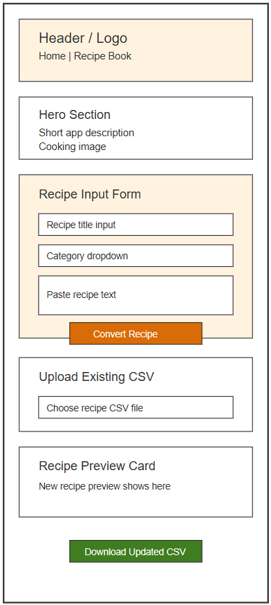
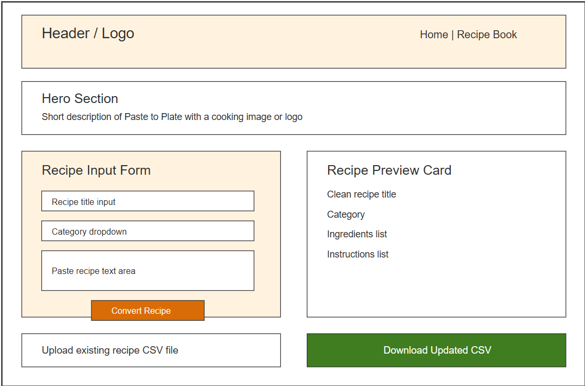
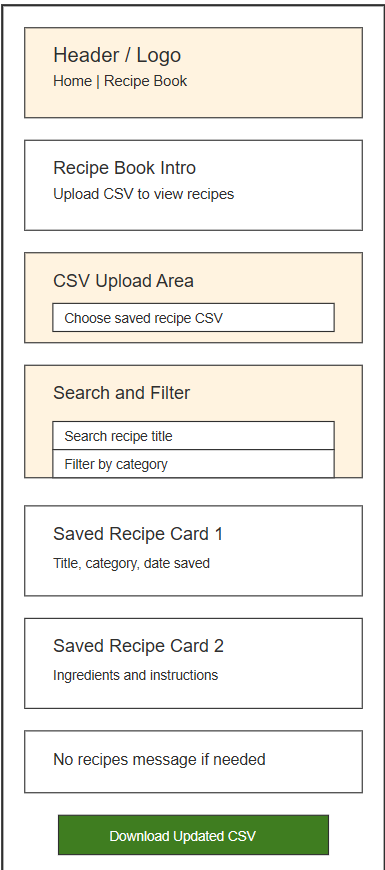
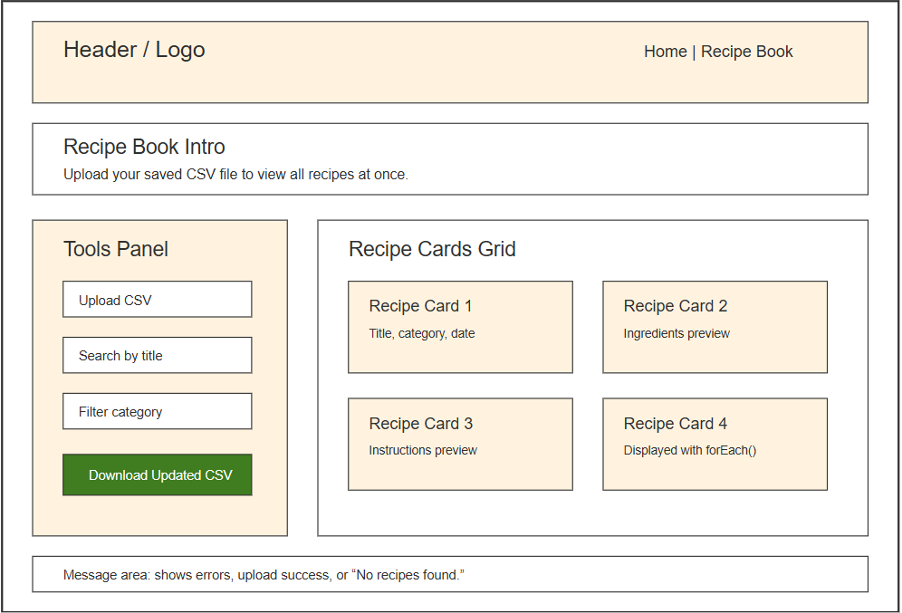

Overview
Purpose
The purpose of Paste to Plate is to help users turn messy recipe text from a website into a clean, organized recipe card. Users will be able to paste recipe text, enter basic recipe information, preview the cleaned-up recipe, upload an existing recipe CSV file, add the new recipe to that CSV data, and download an updated CSV file to save on their device.
Audience
The intended audience is people who like cooking and want an easy way to save online recipes without copying everything by hand into a document. This site is especially useful for students, families, beginner cooks, or anyone who wants a simple digital recipe book that can be saved as a CSV file and opened again later.
Dynamic elements
JavaScript will be used to make the recipe converter and recipe book interactive. The user will paste recipe text into a text area, enter a title and category, and click a button to convert the text into a recipe card. JavaScript will select form elements from the DOM, listen for button clicks and file uploads, check if required fields are filled in, create recipe objects, store the recipes in an array, read an uploaded CSV file, add new recipes to the existing CSV data, display all recipes on a second page, and create a downloadable updated CSV file. The project will use multiple functions, conditional branching, objects, arrays, and array methods such as forEach(), map(), and filter().
Branding
Website Logo
Style Guide
Color Palette
Palette URL: https://coolors.co/7a4e2d-fff3e0-3f7d20-d96c06-2f2f2f| Primary | Secondary | Accent 1 | Accent 2 |
|---|---|---|---|
| #7A4E2D | #FFF3E0 | #3F7D20 | #D96C06 |
Pseudocode
Setup
- Create two HTML pages: an index page for converting pasted recipe text and a recipe book page for uploading and viewing a recipe CSV file.
- On the index page, add a header, navigation links, a short explanation of the app, a cooking-related image, a form area, a recipe preview area, a CSV upload input, a message area, and a button to download the updated CSV file.
- On the recipe-book page, add a header, navigation links back to the home page, a CSV upload input, search and filter controls, a section for recipe cards, and a message area for when no recipes are loaded.
JavaScript
-
Create an empty
recipesarray in JavaScript to store all recipe objects. -
Each recipe object will include an
id,title,category,ingredients,instructions,originalText, anddateSaved. -
Use
document.querySelectorto select the title input, category menu, recipe text area, convert button, preview container, message area, CSV upload input, recipe list container, search input, filter controls, and download button.
Main Functions
-
Write a
getRecipeInputfunction that collects the title, category, and pasted recipe text from the form fields. -
Write a
validateRecipeInputfunction that checks whether the title or recipe text is missing. If a required field is empty, display an error message. Otherwise, allow the recipe to be converted. -
Write a
parseRecipeTextfunction that separates the pasted text into smaller lines and creates simple ingredient and instruction lists. -
Write a
createRecipeObjectfunction that creates one recipe object using the title, category, ingredients, instructions, original text, unique id, and date saved. -
Write a
displayRecipePreviewfunction that updates the DOM and shows the cleaned recipe card on the page.
Recipe Book
-
Write a
handleCSVUploadfunction that listens for a CSV file upload. -
Use
FileReaderto read the uploaded CSV file, split the CSV text into rows, convert each row into a recipe object, and store those objects in therecipesarray. -
Write an
addRecipeToCSVDatafunction that adds the new recipe object to the existingrecipesarray. -
Write a
displaySavedRecipesfunction for the recipe-book page. This function will useforEach()to loop through the recipes array and display each recipe as a card. -
Write a
filterRecipesfunction that usesfilter()to show only recipes that match the selected category or search term.
CSV Download
-
Write a
convertRecipesToCSVfunction that usesmap()to turn each recipe object into a CSV row. -
Write a
downloadUpdatedCSVfunction that creates a CSV file with aBlob, creates a temporary download link, and lets the user save the updated CSV file to their device. - Add event listeners to the convert button, CSV upload input, download button, search input, and category filter.
Wireframes
Landing Page - Mobile View
The mobile landing page will let users paste recipe text, convert it into a clean recipe card, upload an existing CSV file, add the new recipe to the loaded recipe data, and download an updated CSV file. On mobile, the sections will stack vertically for easy reading.

Landing Page - Desktop View
The desktop landing page will use a wider layout. The header and navigation will stretch across the top. The recipe input form and recipe preview will be placed side by side so users can paste recipe text on the left and immediately see the cleaned recipe card on the right. The CSV upload and download controls will appear below the main converter area.

Recipe Book Page - Mobile View
The second page will be called recipe-book.html. It will let users upload their saved recipe CSV file from a specific location on their device, such as their Downloads folder or a Recipes folder. After the CSV is uploaded, JavaScript will read the file and display all recipes at once as recipe cards. Users will also be able to search, filter, and download the updated CSV again if they make changes.

Recipe Book Page - Desktop View
The desktop recipe book page will show all uploaded recipes in a larger grid layout. Users will upload their saved CSV file, then JavaScript will read the file and display the recipes as cards. Search and filter tools will appear on the left side, while the recipe cards will appear on the right side.
